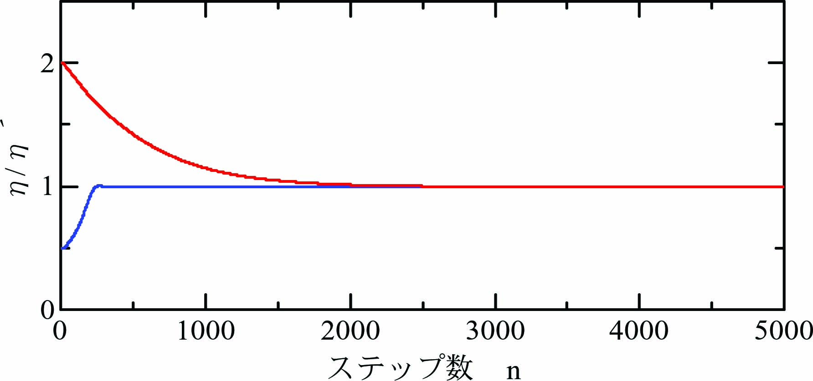

モデル規範適応制御の適応制御則には制御対象の状態ベクトル\(\mathbf{x}=[x~~\dot x]^T\)が必要ですが、 現実の制御対象では、観測できるのは制御対象からの出力\(y=x\)のみです。 そこで、ここでは\(\dot x\)を差分近似する手法を試み、モデル規範適応制御の動作を確認します。
超安定論によるモデル規範適応制御 を数値解析で確認します。
\begin{align} \ddot x + \eta K_D \dot x + \eta K_P(x - u) = 0 \label{eq:SysEqn} \end{align}ここに、\(x\)は位置、\(K_D\)は微分ゲイン、\(K_P\)は比例ゲイン、\(u\)は位置入力、\(\eta(>0)\)は駆動効率係数です。
微分ゲイン\(K_D\)と比例ゲイン\(K_P\)を次式で調整します。
\begin{align} K_D = \frac{a}{\hat\eta},~~~~K_P = \frac{b}{\hat\eta}. \label{eq:ModEta} \end{align}ここに、\(\hat\eta\)は駆動効率\(\eta\)の推定値です。
目的とする制御性能を規範モデル規範モデルとして次式で与えます。
\begin{align} \ddot x_M + a\dot x_M + b(x_M - u)= 0 \label{eq:MdlEqn} \end{align}ここに、\(x_M\)は規範モデルの位置です。係数\(a > 0\)、\(b > 0\)とします。
式\eqref{eq:ModEta}の\(\hat\eta\)を超安定論によるモデル規範適応制御 で導出した適応制御則に従って調整します。
適応制御則：
\begin{align} \left. \begin{array}{@{\,}rl} \dot{\hat{\eta}} &=~ \alpha \frac{\{a \dot x + b (x - u)\}\varepsilon}{\hat\eta}\\ \varepsilon &=~ e + c\dot e,\\ e &=~ x_M - x. \end{array} \right\} \label{eq:AdaptRule} \end{align}強誠実条件：
\begin{align} c > \frac{1}{a} \label{eq:STR_Cond} \end{align}ここでは、\(a=25.12\)、\(b=3943\)、\(c=2/25.12\)、\(\alpha = 1.0\times 10^{-5}\)とします。
\(\eta=0.5.2.0\)について\(\eta/\hat\eta\)の動作をオイラー法による逐次数値積分 による数値シミュレーションで観察します。
オイラー法の時間刻み\(\varDelta t = 0.0001\)[s]として計算します。\(x_0(n)=x(n)\)として
\begin{align} \left. \begin{array}{@{\,}rl} \ddot x_k(n)&=~ -\eta K_D \dot x_k(n) - \eta K_P\{x_k(n) - u(n)\},\\ \dot x_{k+1}(n)&=~ \dot x_k(n)+\ddot x_k(n)\varDelta t,\\ x_{k+1}(n)&=~ x_k(n) + \dot x_k(n)\varDelta t + \frac{1}{2}\ddot x_k(n)\varDelta t^2. \end{array} \label{eq:Euler} \right\} \end{align}規範モデル\eqref{eq:MdlEqn}はサンプル時間\(T=0.005\)[s]として、離散時間状態方程式 で計算します。
\begin{align} \left[ \begin{array}{@{\,}l} x_M(n+1)\\ \dot x_M(n+1) \end{array} \right] = \left[ \begin{array}{@{\,}cc} 0.9531&0.004222\\ -18.23&0.8370 \end{array} \right] \left[ \begin{array}{@{\,}l} x_M(n)\\ \dot x_M(n) \end{array} \right] + \left[ \begin{array}{@{\,}c} -0.04691\\ 18.23 \end{array} \right]u(n). \label{eq:StateEq} \end{align}式\eqref{eq:StateEq}を１回実行する間に式\eqref{eq:Euler}を\(T/\varDelta t=50\)回(\(k=0\cdots 49\))実行します。
現実の制御対象では出力\(y=x\)以外の状態量は計測できませんので、 ここでは\(\dot x\)を中央差分で近似します。
\begin{align} \dot x^\prime(n) = \frac{x(n+1)-x(n-1)}{2T} \label{eq:DiffX} \end{align}中央差分\eqref{eq:DiffX}で\(\dot x^\prime\)の現在値\(\dot x^\prime(n)\)の計算には未来値が必要です。 そこで、適応制御則\eqref{eq:AdaptRule}には\(x\)、\(\dot x\)、\(u\)には1ステップ過去値を採用し、 \(\dot{\hat\eta}(n)=\{\hat\eta(n)-\hat\eta(n-1)\}/T\)と近似して適応制御則\eqref{eq:AdaptRule}を次式とします。
\begin{align} \left. \begin{array}{@{\,}rl} \hat\eta(n+1)&=~\hat\eta(n)-\alpha T\frac{v_{FB}(n-1)\varepsilon(n-1)}{\hat\eta(n-1)}\\ v_{FB}(n)&=~-a \dot x^\prime(n) - b \{x(n) - u(n)\}\\ \varepsilon(n) &=~ x_M(n) - x(n) + c\{\dot x_M(n) - \dot x^\prime(n)\} \end{array} \label{eq:AdaptRuleDgt} \right\} \end{align}数値実験では式\eqref{eq:Euler}～\eqref{eq:AdaptRuleDgt}を１ステップとします。
初期値\(\hat{\eta} = 1\)として、 \(\eta = 2.0\)と\(\eta = 0.5\)の場合について 規範モデル\(x_M\)に対する適応制御系\(x\)の挙動を数値実験により観察します。
\(\eta = 2.0\)の場合、2000ステップで適応制御系\(x\)が規範モデル\(x_M\)に一致しています。
\(\eta = 0.5\)の場合、250ステップで適応制御系\(x\)が規範モデル\(x_M\)に一致しています。
\(\eta/\hat{\eta}=1\)に収束(\(\hat{\eta} = \eta\))しており、適応制御成功を確認できます。